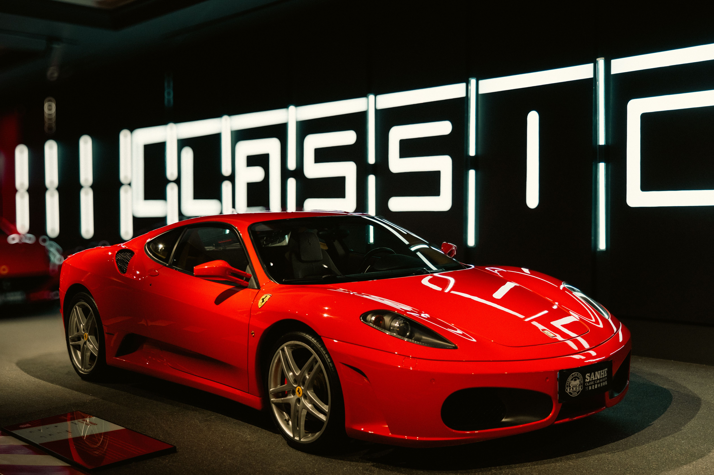

Características
- Motor de alto rendimiento
- Diseño aerodinámico
- Tecnología híbrida en algunos modelos
- Gran aceleración
Una de las marcas italianas más famosas del mundo.

Ferrari es una marca italiana reconocida por fabricar automóviles de alto rendimiento.
La pasión por los automóviles forma parte de la identidad de Ferrari.
Concepto general relacionado con la filosofía de Ferrari.
Algunos modelos utilizan motores V8 y V12. Su potencia puede superar los 700 HP2.
El consumo de combustible puede medirse en L2/100 km.